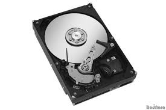
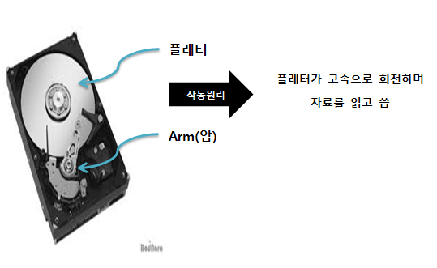

HDD와 SSD는 저장장치다.각종 데이터들을 저장해두는 창고라고 보면된다.
HDD의 구조는 이렇다.

HDD의 작동원리를 간단하게 표현해보자

하지만 하드디스크의 속도는 CPU와 RAM에 비하면 매우 느리다
그러면 어떻게 HDD의 속도를 높일까?
하지만, 플래터의 회전속도가 빠른 하드디스크(HDD)는 너무 비싸고 소음과 진동도 심하다.
이러한 단점을 극복하고자 나온 저장장치가 SSD이다.
SSD는 하드디스크(HDD)와 달리 고용량 메모리칩을 여러개 넣은 구조이다.
회전을 하지 않기 때문에 소음이 없다. 하드디스크처럼 검색장치(ARM)가 내부에서 찾는 것이 아니기 때문에 저장된 자료를 찾는 속도또한 매우 빠르다.
그렇지는 않다. 그 이유는 하드디스크 만의 장점도 있기 때문이다.
우선, 용량 대비 가격이 저렴하다. 현재의 기술력으로 SSD의 데이터복구는 불안정하다 그러므로 중요한 데이터백업용 자료는 하드디스크에 넣어둔다.
그래서 메인프로그램용으로는 속도가 빠른 SSD를 사용하고 데이터저장용으로는 안전한 하드디스크(HDD)를 사용하는 것이 좋다.